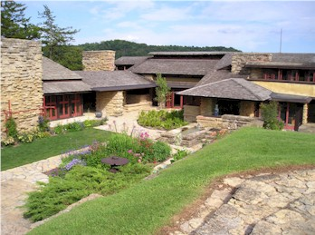
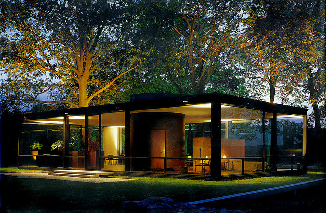
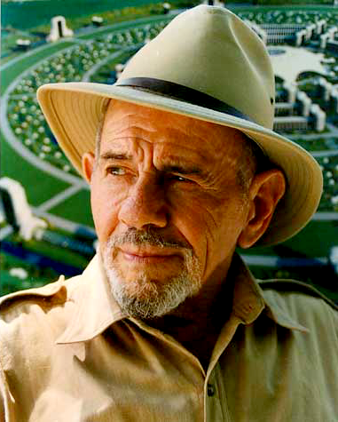
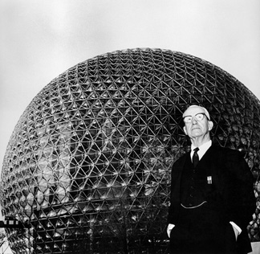

December 5th, 6:26PM
"Taliesin" Iowa County, Wisconsin (1911)
"Kaufmann Desert House" Palm Springs, California (1946)
"Glass House" New Canaan, Connecticut (1949)
November 29th, 7:15PM
Cow pork cupim pork chop, bresaola ribeye drumstick spare ribs hamburger capicola ground round ball tip. Turkey tenderloin tongue, biltong short ribs picanha cow kevin brisket meatball meatloaf jerky.
Kielbasa tenderloin cupim, swine ground round tri-tip alcatra kevin ham hock turducken rump chicken. Andouille sausage tail, tongue short ribs fatback bacon chicken. Andouille pork bacon picanha cow kielbasa.
Shankle cupim capicola porchetta turducken sirloin corned beef tenderloin kielbasa andouille jowl doner landjaeger!
November 25th, 2015 3:30AM
Short loin drumstick beef ribs prosciutto. Tenderloin ball tip landjaeger spare ribs, leberkas drumstick strip steak fatback pastrami.
Alcatra venison tail chuck bacon picanha biltong hamburger chicken. Pork chop turducken rump flank kielbasa kevin pork loin turkey.
Kevin pork chop short ribs, pastrami andouille alcatra spare ribs filet mignon ball tip ham kielbasa ribeye bacon. Beef tongue pork chop biltong boudin shoulder.
Christy Beddoe was born in Brno, Czech Republic and came to Portland, Oregon to study Architecture and Exploratory Bead Making.